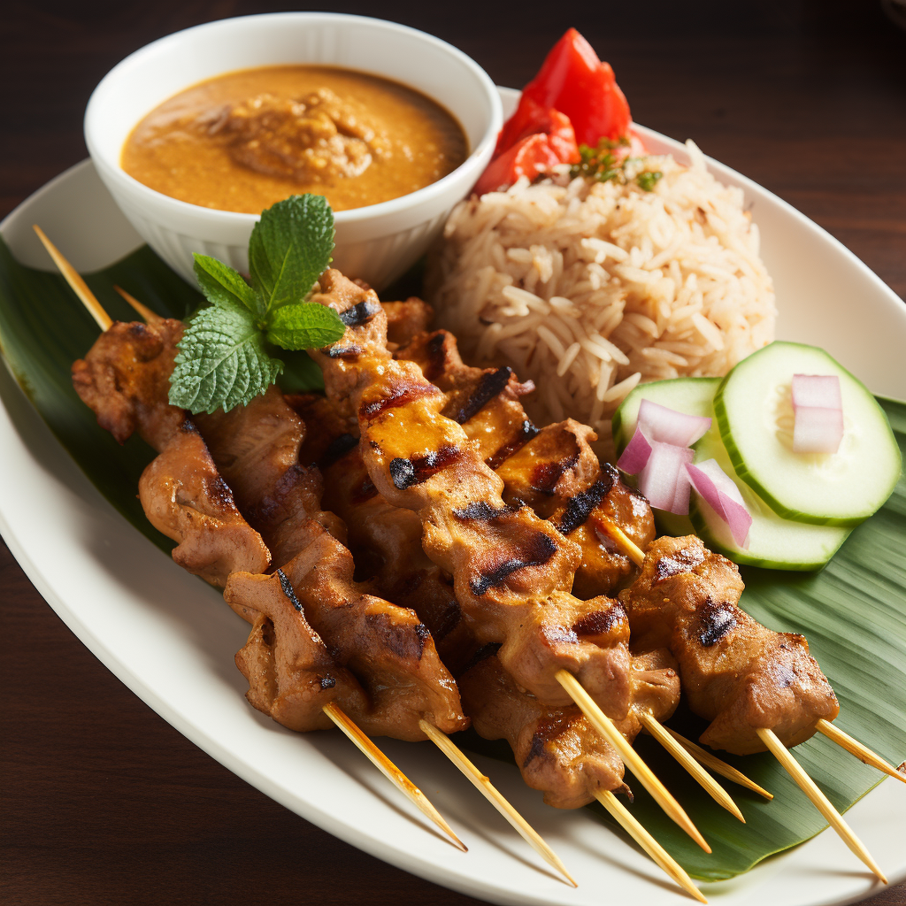

Satay Sensation
Embark on a flavor-packed journey with the beloved Indonesian satay, showcasing skewers of marinated and grilled meat, often accompanied by chicken, beef, or lamb. The tender morsels are generously seasoned, infusing the meat with a blend of spices before being expertly grilled to smoky perfection. Served with a velvety peanut sauce and a side of cucumber and rice cakes, the satay offers a delightful combination of sweet, savory, and nutty flavors, a true delight for your taste buds.